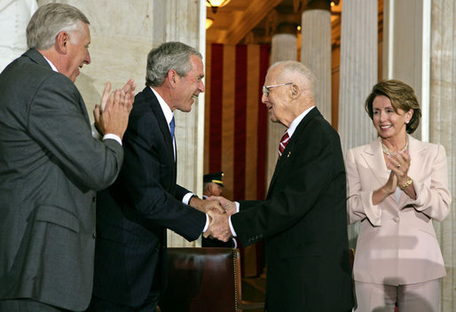

congratulate Borlaug during the Congressional Gold Medal Ceremony
on July 17,2007.
Honors and Awards
In 1968, Borlaug received what he considered an especially satisfying tribute
when the people of
were undertaken, named a street after him. Also in that year, he became a
member of the U.S
- In 1970, he was given an honorary doctorate by the Agricultural University of Norway.[59]
- In 1970, he was awarded the Nobel Peace Prize by the Norwegian Nobel Committee "for his contributions to the 'green revolution' that was having such an impact on food production particularly in Asia and in Latin America."[59]
- In 1971, he was named a Distinguished Fellow of the National Academy of Agronomy and Veterinary Medicine of Argentina[60]
- In 1971, he received the American Academy of Achievement's Golden Plate Award.[61]
- In 1974, he was awarded a Peace Medal (in the form of a dove, carrying a wheat ear in its beak) by Haryana Agricultural University, Hisar, India.
- In 1975, he was named a Distinguished Fellow of the Iowa Academy of Science.[62]
- In 1980, he received the S. Roger Horchow Award for Greatest Public Service by a Private Citizen, an award given out annually by Jefferson Awards.[63]
- In 1980, he was elected honorary member of the Hungarian Academy of Sciences.
- In 1985, the University of Minnesota named a wing of the new science building in Borlaug's honor, calling it "Borlaug Hall."
- Borlaug was elected a Foreign Member of the Royal Society (ForMemRS) in 1987.[2][65]
- In 2012, a new elementary school in the Iowa City, IA school district opened, called "Norman Borlaug Elementary".